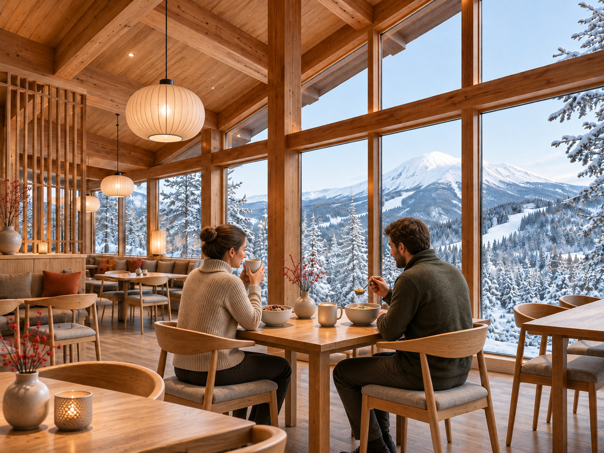
レストラン「森のテラス」
大きな窓から雪山を眺め、家族でゆっくり食事を。

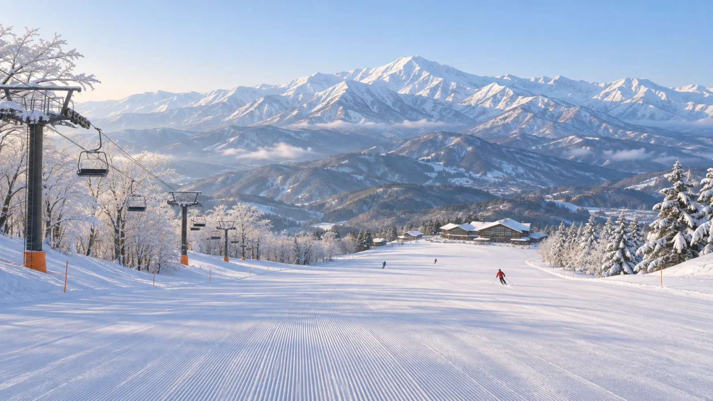
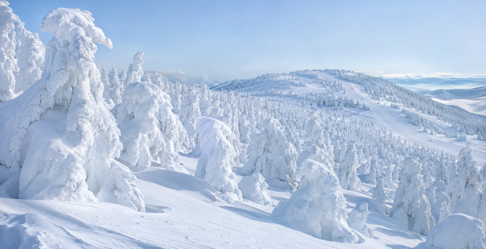
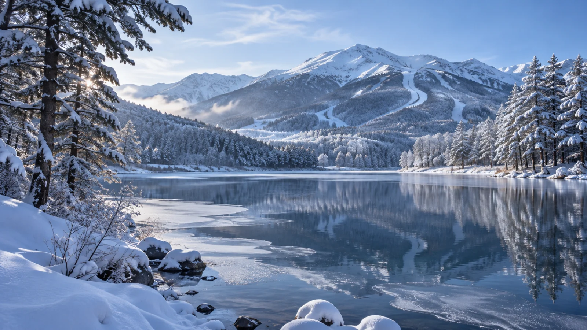
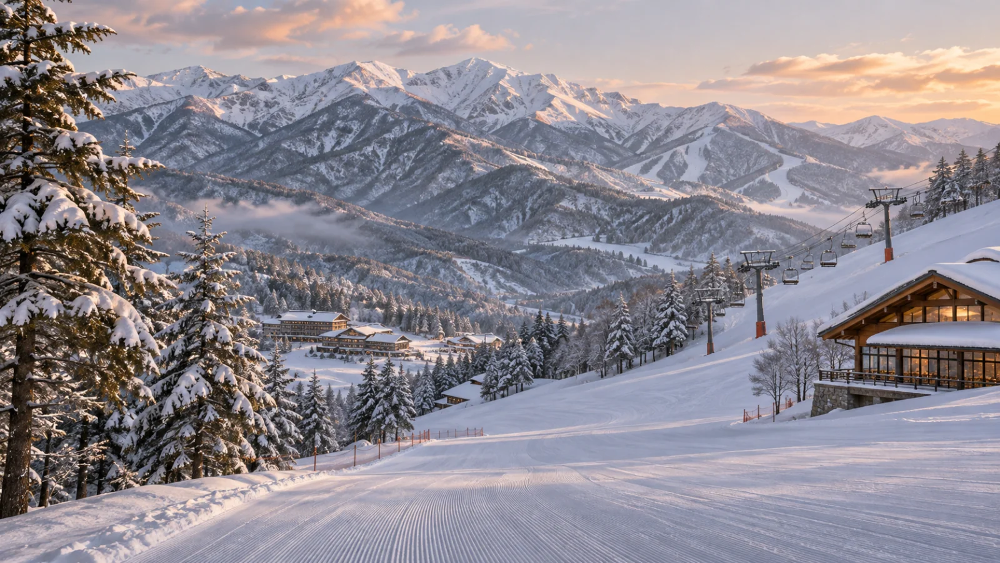
SNOW REPORT
※ 架空の表示例です。実際の情報ではなく、自動更新されません。
営業時間（架空）：8:30〜16:30
お知らせ（表示例）すべてのリフト・コースが利用できる例です。
COURSE MAP
八沢の4つのコースをご紹介します。
地図には運行・滑走状況は反映されません。上の営業情報をご確認ください。
※ 架空のスキー場の配置イメージです。縮尺や実際の滑走可能な地形は示していません。
全体図（位置関係の目安）
詳しい地図は左右に動かしてご覧いただけます。
リフトの線の切れ目はコースとの交差を示し、乗り換え地点ではありません。
写真は個別に制作したイメージで、地図と同じ地形を写したものではありません。
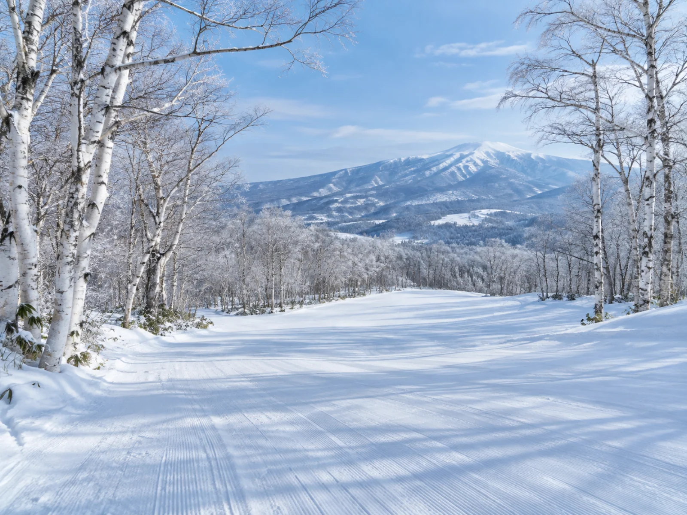
BEGINNER COURSE 初級
白樺に囲まれた、ゆるやかな雪の斜面。
はじめてのスキーにおすすめ。
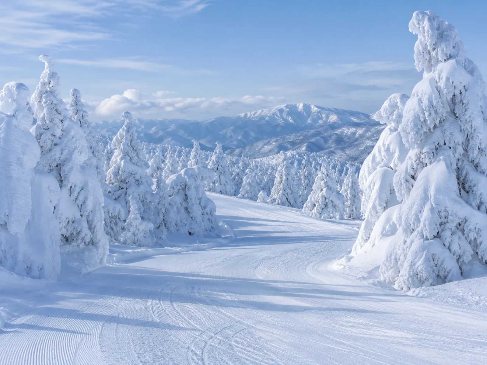
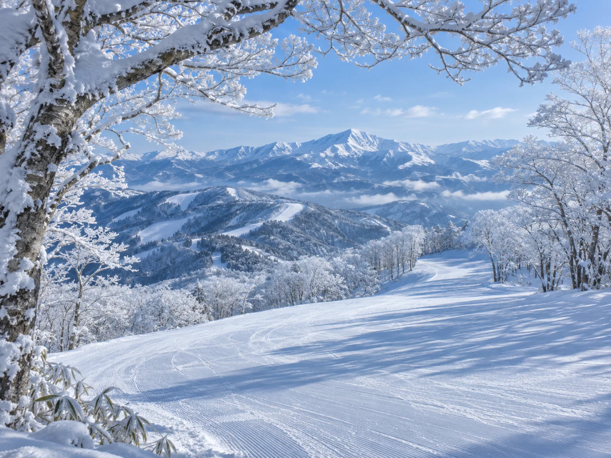
INTERMEDIATE COURSE 中級
樹氷の先に広がる、八沢の山並み。
景色と滑りを楽しみたい中級者向け。
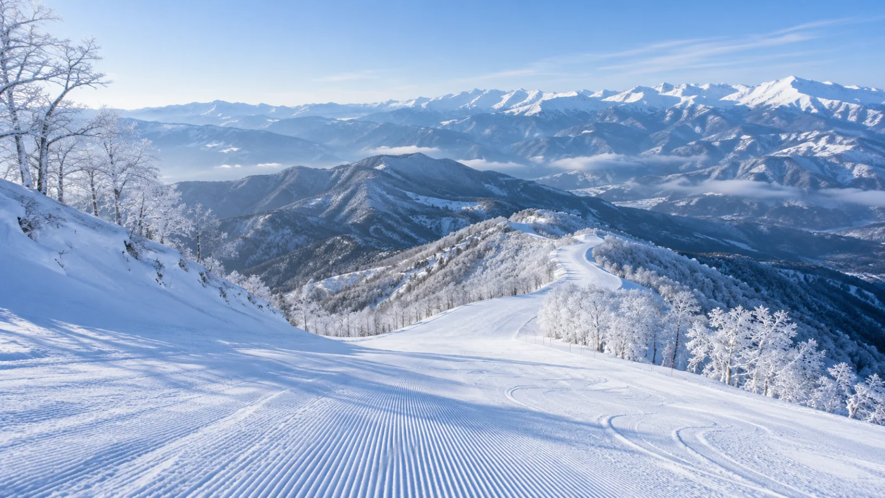
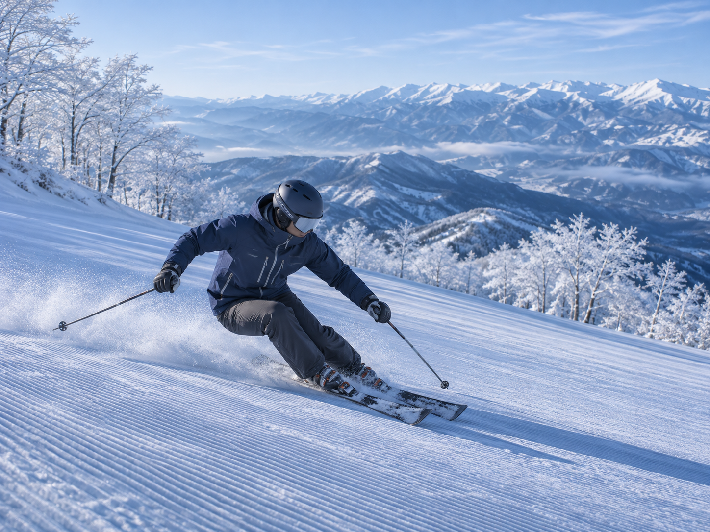
ADVANCED COURSE 上級
高い場所から山並みを望み、変化のある斜面へ。
ターンを楽しむ上級者向け。
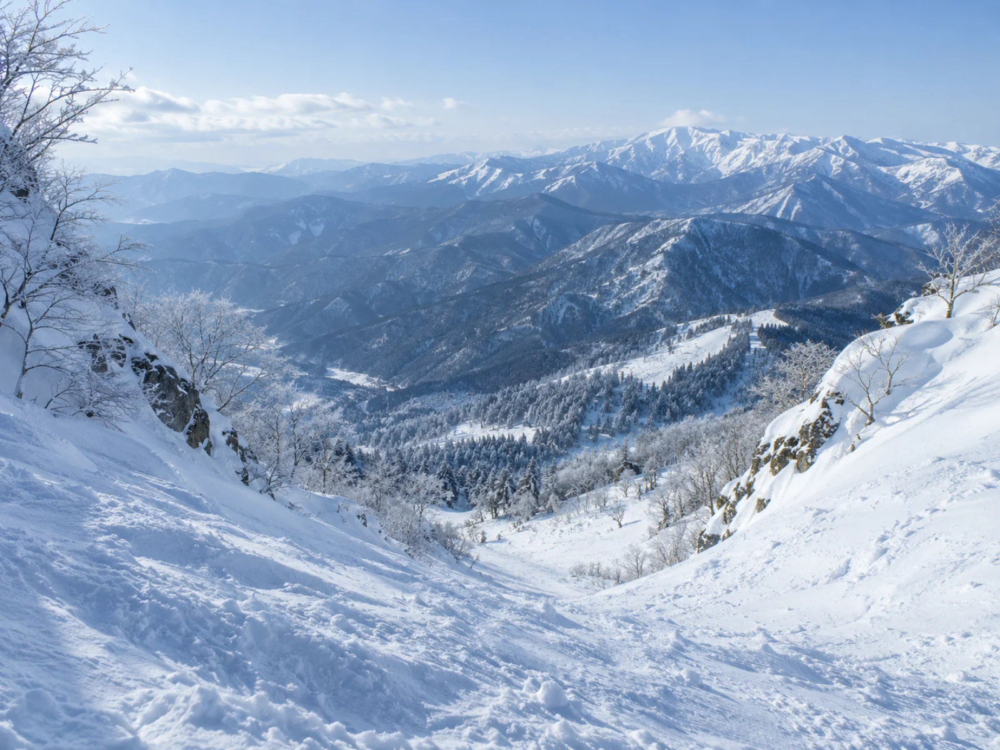
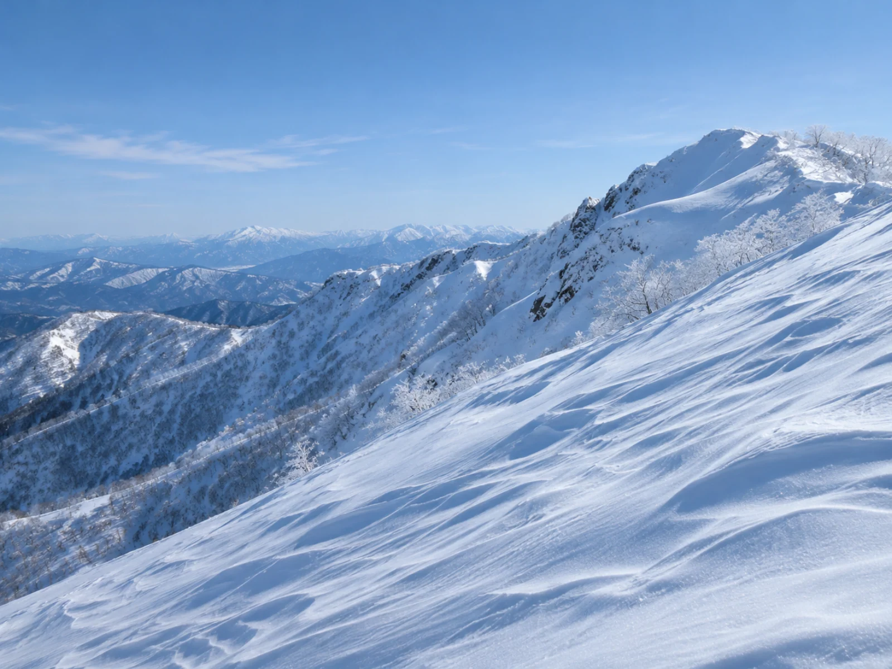
EXPERT COURSE · 超上級者向け
山頂から急斜面を望む、挑戦のコース。
経験豊富な方に向けた、非圧雪の斜面。
FIRST VISIT
雪の一日を楽しむために、まずはここから。
PRICES
家族みんなで、雪の一日を楽しもう。
※ 架空のスキー場の料金設定です。
| 券種 | 大人 | 子ども |
|---|---|---|
| 1日券 | 4,800円 | 2,400円 |
| 半日券 | 3,200円 | 1,600円 |
ファミリー1日券 11,000円
大人2人＋子ども1人。小学生なら通常より1,000円お得。
半日券の利用時間（架空）：午前 8:30〜12:30、午後 12:30〜16:30。
子ども料金は小学生以下。未就学児はリフト券を持つ保護者と一緒なら無料。
| レンタル | 大人 | 子ども |
|---|---|---|
| スキーセット | 4,000円 | 2,500円 |
| スノーボードセット | 4,000円 | 2,500円 |
| ウェア上下 | 3,000円 | 2,000円 |
| 手ぶらセット | 6,000円 | 3,800円 |
スキーセット：板・ブーツ・ストック。スノーボードセット：板・ブーツ。
手ぶらセット：スキーまたはスノーボードセット＋ウェア上下。
子ども料金は小学生以下。グローブ・ゴーグルはセットに含まれません。
FACILITIES
八沢で過ごす、あたたかなひととき。

大きな窓から雪山を眺め、家族でゆっくり食事を。
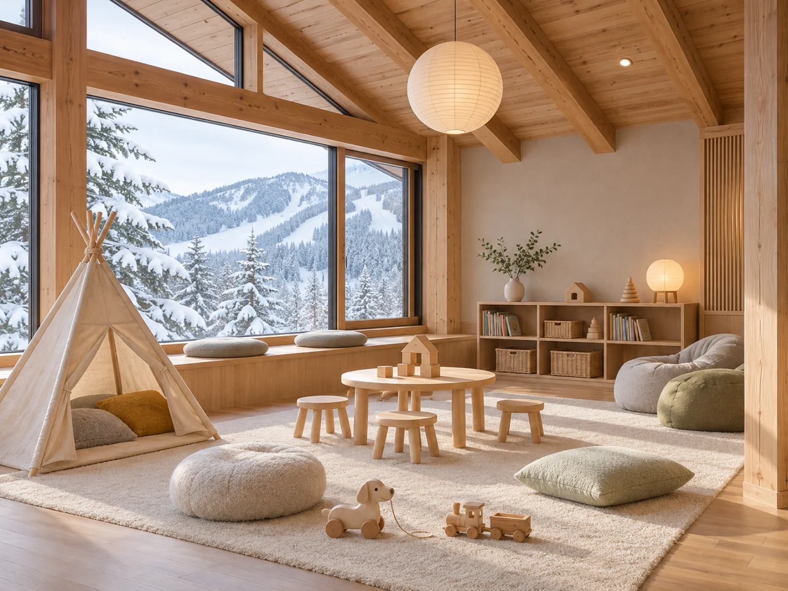
小さな子どもが遊べる、あたたかな室内の休憩場所です。
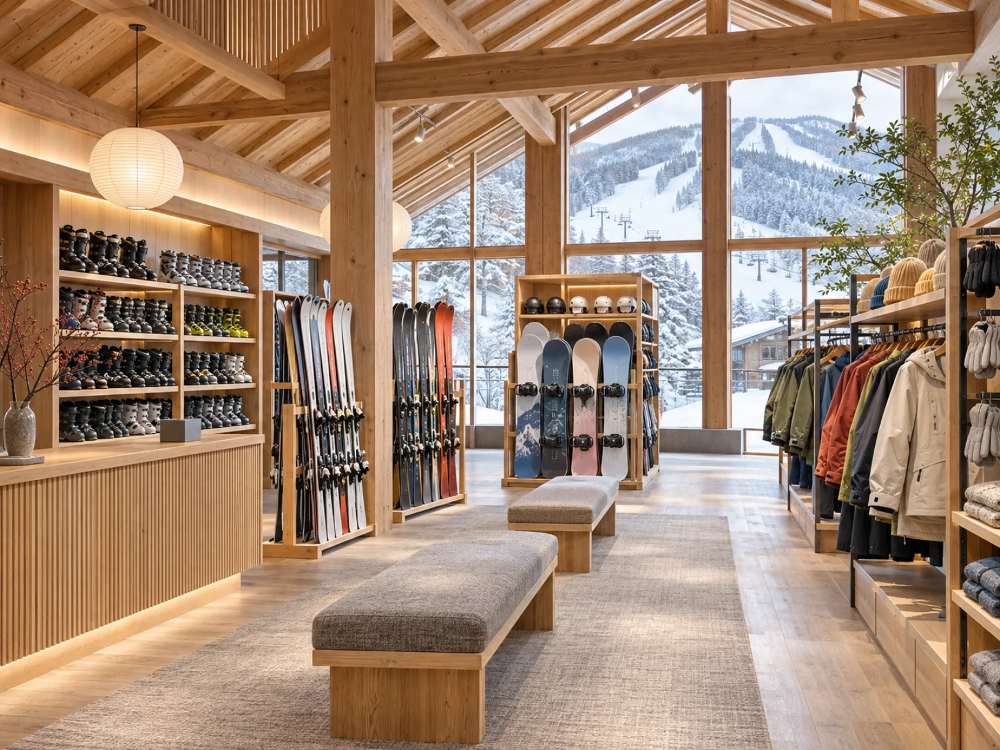
スキーやスノーボード、ウェアを借りられます。初めての雪山も身軽に楽しめます。
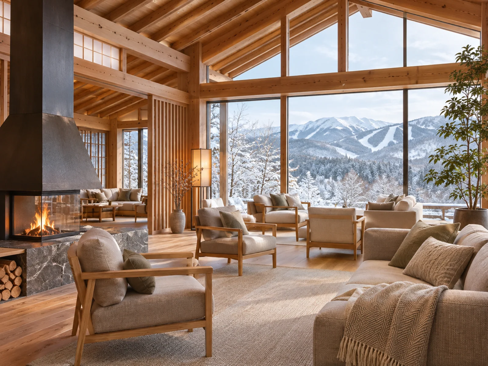
滑り疲れたら、雪景色を眺めながらゆっくりひと休み。
ACCESS
電車・シャトルバス・お車でのアクセスをご案内します。
※ 八沢スキー場と下記の駅・道路・交通手段は、すべて架空の設定です。
架空の「雪の森駅」から、スキー場までシャトルバスで約30分。
スキー場の営業期間中は毎日運行。
料金は無料、予約は不要です。
満席の場合は次の便をご利用ください。最終便が満席の場合は、ロッジの総合案内でタクシーの手配をご相談ください（運賃別途）。
架空の「雪の森インターチェンジ」から、スキー場まで約25分。
駐車場は無料、収容台数は500台。スキー場の営業期間中にご利用いただけます。
ゲレンデや料金、施設、アクセスをご案内します。
架空のスキー場を題材にした学習作品です。コースの情報・料金は架空の設定で、画像はAIで生成したイメージです。
この作品の紹介を見る